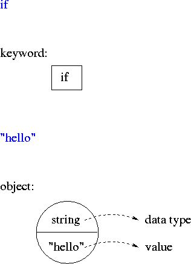
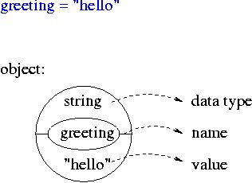
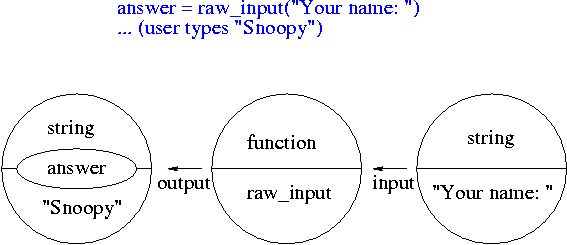
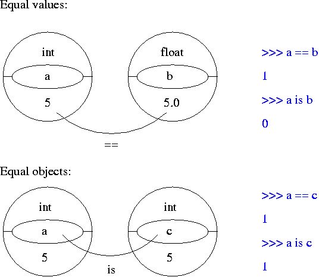

((a and b) or c)
1.2) Write a script that asks someone to input their first name,
last name and phone number. If the user does not type at least
some characters for each of these, print "Do not leave any fields
empty" otherwise print "Thank you". (Hint: if a variable is empty,
its value will be "false".)
1.3) Change the script so that the script prints "Thank you" if either
the first name or the last name or the phone number is supplied.
Print "Do not leave all fields empty" otherwise.
1.4) Change the script so that only first name and last name are required.
The phone number is optional.
2) Other logical expressions for if statements
| a == b | Is a equal to b?
|
| a != b | Is a unequal to b?
|
| a <= b | Is a smaller or equal to b?
|
| a >= b | Is a larger or equal to b?
|
| a < b | Is a smaller than b?
|
| a > b | Is a larger than b?
|
| a is b | Is a the same object as b?
|
| a is not b | Is a the not same object as b?
|
Note: for strings "smaller" and "larger" refers to the alphabetical
order.
Exercises:
2.1) Write a program that asks a user to input a color.
If the color is black or white, output "The color
was black or white". If it starts with a letter
that comes after "k" in the alphabet,
output "The color starts with a letter that comes after "k" in the
alphabet". (Optional: consider both capitalized and non-capitalized
words. Note: the order of the alphabet in Unix and Python
is: symbols, numbers, upper case letters, lower case letters.)
2.2) Write a program that asks a user to input a number.
If the number equals "5",
output "My lucky number".
If the number is larger than 10, output "What a large number!".
In all other cases, output "That's not my lucky number."
3) Objects have a name, type and value

| Python code | name | value | data type
|
|---|
| greeting = "hello" |
greeting | "hello" | string
|
| number = 1 |
number | 1 | int
|

| Python code | name | value | data type
|
|---|
| answer = raw_input ("Your name: ") |
raw_input | | function
|
| |
| "Your name:" | string
|
| (user enters "Snoopy") |
answer | "Snoopy" | string
|
| choice = input ("Your age: ") |
input | | function
|
| |
| "Your age:" | string
|
| (user enters 104) |
choice | 104 | int
|

4) Functions for displaying types/changing types
| type() | displays the type of an object
|
| str() | converts objects into printable strings
|
| int() | converts non-integer numbers into integers
|
Exercise
4.1) In the Python interpreter, apply the functions type(), str(), int()
to various objects (eg. "hello", 5, raw_input). See what happens.
Optional Exercise
4.2) Ask the user to type something (use raw_input). To find out whether
the input was a number, compare whether the input is after
"0" and before ":" in alphabetical order. If it is a
number convert it into an integer. Then print the input and its type.
(Note: this won't
work if the user enters a real number. See below.)
5) Equality
Objects can have equal values or can be identical. A test for
having equal values is ==; a test for being the
same is is. For example
>>> a = 5
>>> b = 5.0
>>> c = a
>>> a == b
1
>>> a is b
0
>>> a is c
1

6) Object-oriented modeling
Object-oriented modeling provides a means for organizing the different
objects, functions, etc into meaningful groups or classes. For example, in
Python there is a class for strings.
Exercise
6.1) In the Python interpreter, type "import string". Then type:
string.uppercase
string.digits
string.printable
These are all objects that are relevant for strings.
Optional Exercise
6.2) Ask the user to type a Python object. (That means numbers can be
typed directly but strings must be enclosed in quotes.) Use
"input" instead of "raw_input".
Check the type of the user-input in the following manner:
include the line "import types" at the beginning of your script.
Then compare the type of the
user-input to the objects types.IntType, types.FloatType
and types.StringType. Print "The input was an integer", "the input
was a real number", "the input was a string", respectively.